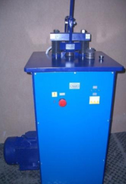
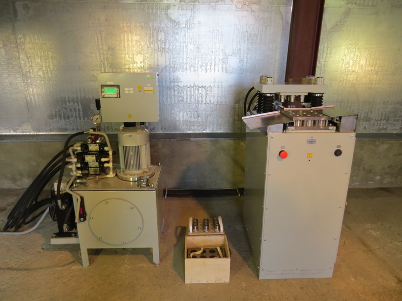
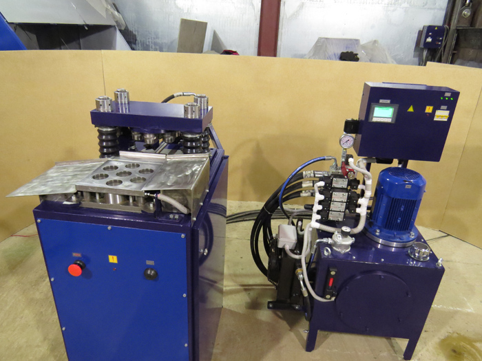
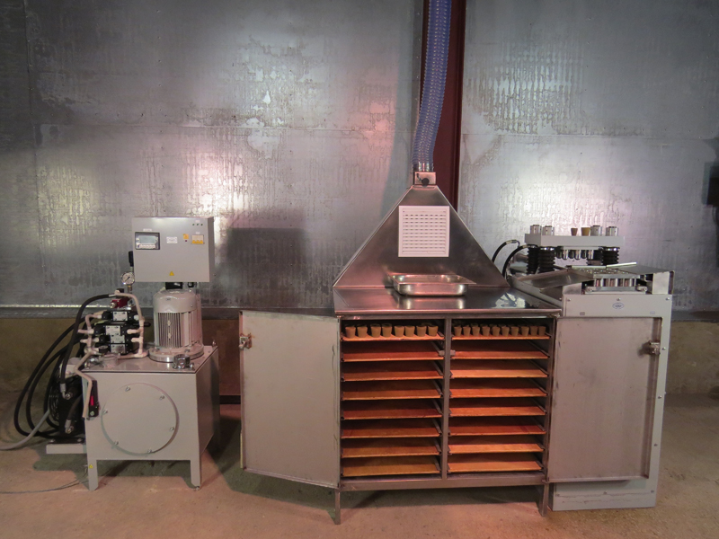

Оборудование предназначено для сухого измельчения магнезита с крупностью частиц не более 5мм.

Пресс для капелей СЭМК-24
Оборудование предназначено для изготовления капелей из магнезитового, цементного и костного сырья.

Пресс для капелей СГК-9.13.У
Оборудование предназначено для изготовления капелей из магнезитового, цементного и костного сырья, со сменной оснасткой для прессования капелей от 7 до 9 шт. за раз, до типоразмера №9 включительно.

Пресс для капелей СГК-7.13.
Оборудование предназначено для изготовления капелей из магнезитового, цементного и костного сырья, и прессования 7 шт. капелей за раз до типоразмера №9 включительно.

Шкаф вытяжной ШВМ-0,9.0,7.1,5.
Шкаф вытяжной предназначен для приготовления смеси из магнезита и 5% серной кислоты и сушки капелей, полученных после прессования или иных смесей.